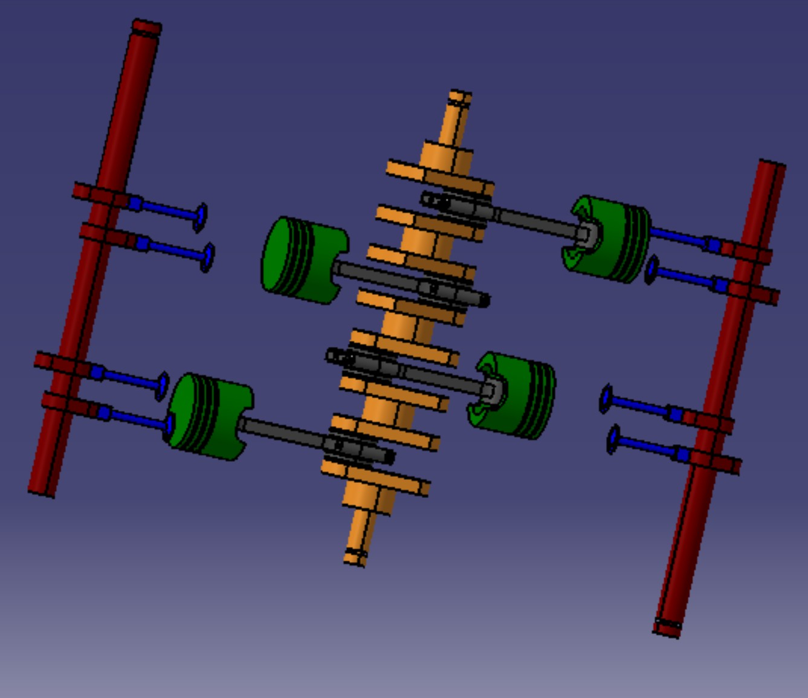
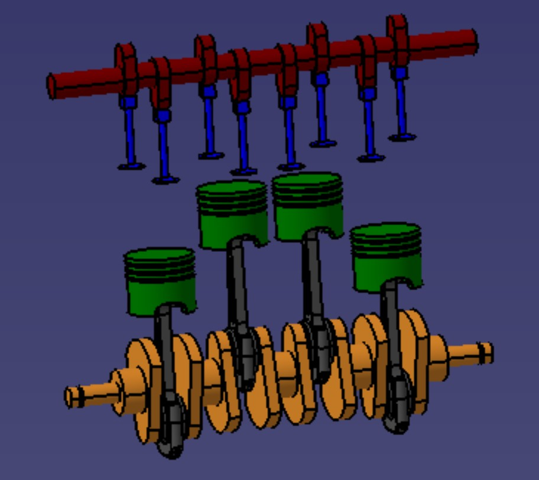
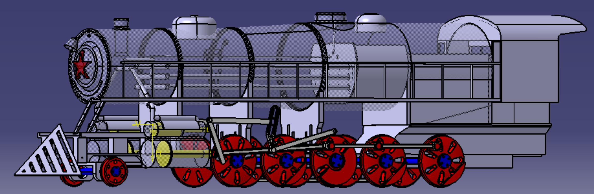
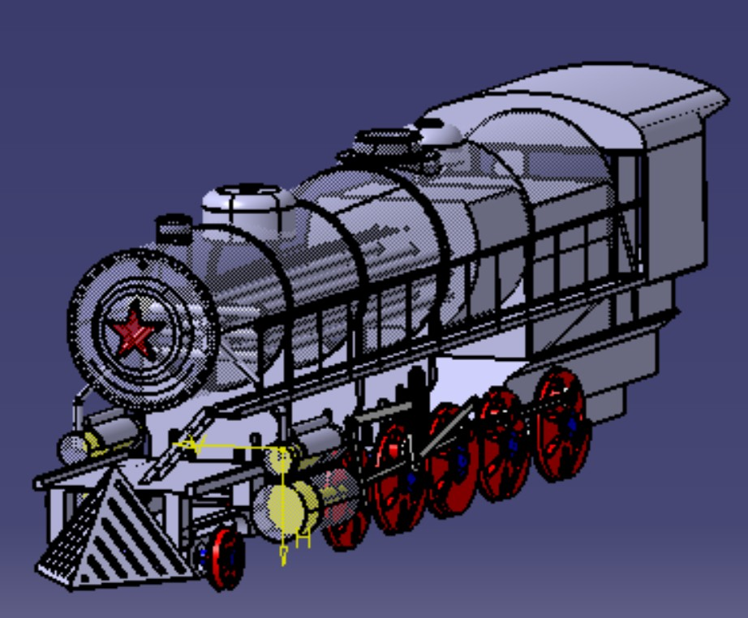
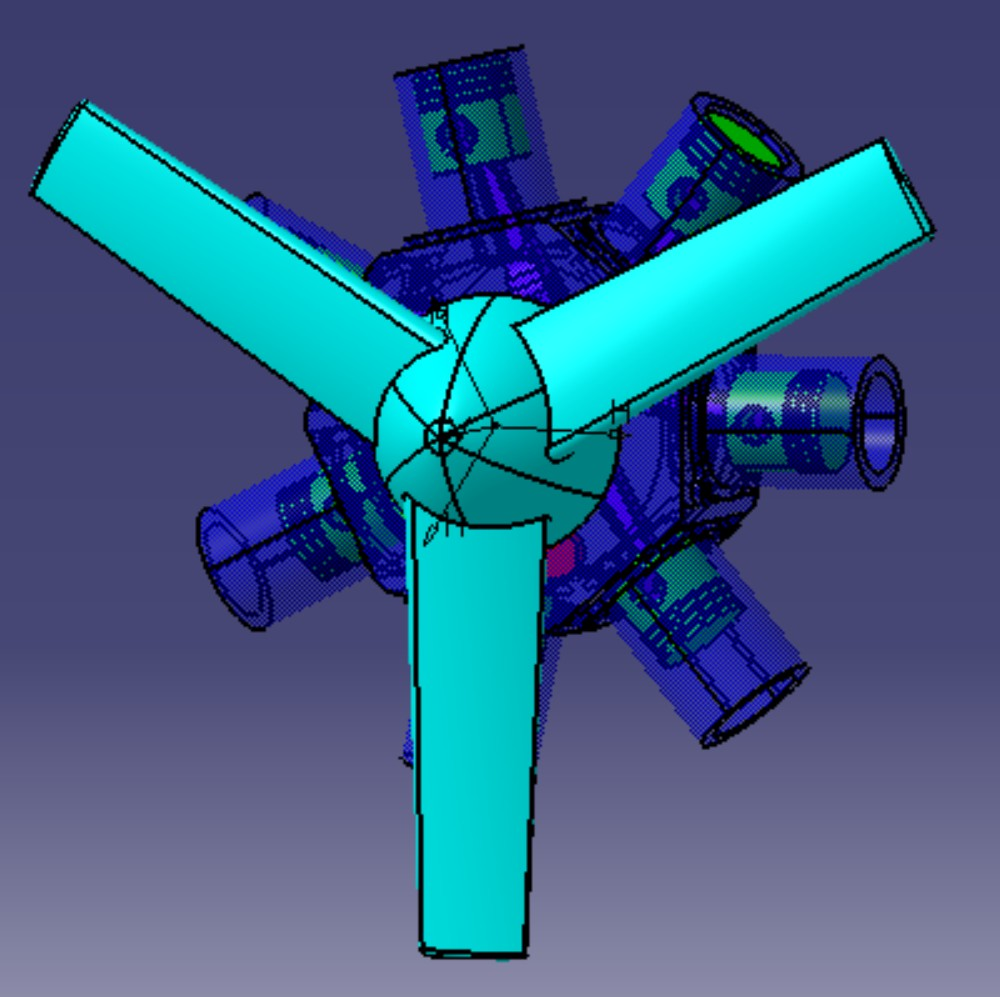
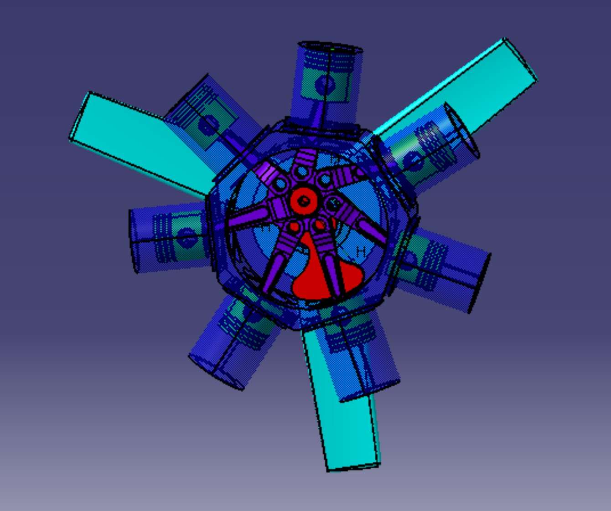

Professional Profile
5th-year Aeronautical and Space Engineering student at IPSA, passionate about mechanical design, aerospace systems, and 3D modeling. Strong experience in CAD design, advanced parameterization, and managing complex technical projects. Currently an intern at Safran Aircraft Engines, I am seeking a first job starting October 2026 in design or structural mechanics.
Technical Skills
Design & Calculations
- Excel (TOSA 848/1000)
- CATIA V5
- ABAQUS
- NASTRAN
- Star CCM+
- Amesim
Programming
- Python
- MATLAB
- VBA
- CATIA V5 Automation
Project Management
- Project Planning
- Team Management
- Task Allocation
- Deadline Compliance
Languages
- French - C1 (Native)
- English - B2 (TOEIC 860/990)
- Spanish - A2 (High School Level)
CAD & Design Projects
Parameterized Internal Combustion Engine

Integral design and parameterization of a multi-configuration combustion engine. This project used CATIA V5's Knowledgeware (Formulas & Relations) module to develop an automatic calculation system linking key technical dimensions (bore, stroke) to a target theoretical power. I was responsible for the Knowledgeware architecture to ensure error-free propagation of changes across more than ten critical parts. The model can switch between three architectures (In-line, Flat, and V engine), with the primary technical challenge being the maintenance of geometric consistency for the crankshaft and crankcase during angle changes.

Main Features:
Trans-Siberian Locomotive

Complete and detailed 3D modeling of a historical steam locomotive (Trans-Siberian). I was responsible for the traction system, covering the design of 5 pairs of drive wheels, axles, connecting rods, and the chassis. This project required managing a complex assembly to create a mechanism synchronized with the pistons, ensuring zero interference or collision between moving parts.

Technical Achievements:
Radial Engine

Detailed design of a 7-cylinder radial engine based on the interpretation and reproduction of dimensioned technical drawings. This project served as the foundation for my CATIA V5 proficiency, focusing on essential core modules: Part Design for creating complex parts (crankcase, pistons, fins) and Assembly Design for assembly and validation of the complete mechanism. The goal was to demonstrate the ability to model with rigor and manage the assembly of a complex radial transmission system (master and auxiliary rods).

Validated Fundamental Skills:
Professional Experience
Integration Engineer Intern - External Systems & Propulsive Assemblies
- Reduced concession processing time (engine/nacelle interfaces on LEAP-1C) by 70% through analysis and optimization of existing processes.
- Designed and deployed a centralized technical tracking tool (interfaces, affected seals, steps & gaps), facilitating and accelerating case resolution.
Supply Chain Methods Assistant Engineer Intern
- Established a common documentary reference (procedures, user manuals, etc.)
- Participated in continuous improvement projects (One Safran, Lean Sigma) along the division's Supply Chain roadmap
- Performed operational tasks within the SC team as a Supply Chain methods engineer
- Integration of LEAP 1A & 1B engines into the maintenance chain
- Participation in aircraft engine maintenance operations
- Exploration of aeronautical maintenance procedures
- Stock management valued at €2.2M with over 5000 references
- Inventory, labeling, and drafting of procedures
- CMMS usage, reporting, stock entry/exit management
- Maintenance of the new Judicial Court of Paris
- Stock management: inventory, drafting procedures, action plan monitoring
- IT environment exploration: CMMS, reporting
Education
Master’s Degree in Aeronautical & Space Engineering
- CAE Option - Aerospace Vehicles and Aeronautical Structural Mechanics
- PMI Project: Development of an inspection tool for GE90 engine injectors in partnership with Air France
- International semester at California State University of Long Beach (USA)
- Obtained the BIA (Aeronautical Initiation Certificate)
- Specialization in Mathematics & Physics